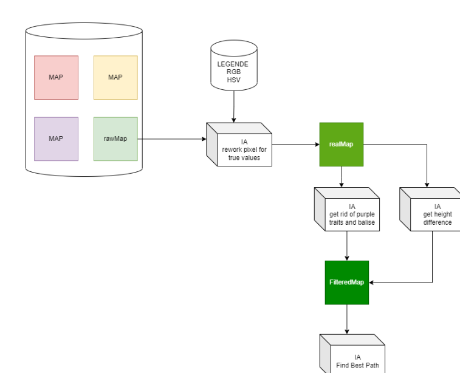
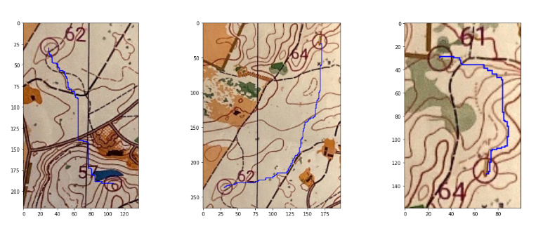

WOCO : Find the best path on an orientation map
Résumé du projet
Ce projet permet, à partir d'une photo d'une carte d'orientation, de déterminer automatiquement le chemin le plus rapide pour atteindre chaque balise présente sur le parcours. En analysant l'image avec OpenCV, puis l'extraction avec un RCNN, en modélisant le réseau de balises via NetworkX, et en appliquant l'algorithme de Dijkstra, le système fournit des itinéraires optimisés pour faciliter la navigation sur le terrain.
Structure de la solution
Fonctionnalités principales
- Analyse d'image et extraction de données : Utilisation d'OpenCV et un RCNN ( Fine tuné sur YOLO ) pour reconnaître et extraire les informations pertinentes (balises, routes, intersections) à partir d'une photo.
- Calcul d'itinéraire optimal : Modélisation du réseau de balises avec NetworkX et application de l'algorithme de Dijkstra pour déterminer le chemin le plus rapide.
Technologies utilisées
- Python : Langage principal pour le développement et l'intégration des différentes composantes.
- Pytorch : Modèle RCNN finetuné sur YOLO
- OpenCV : Pour l'analyse de la carte et l'extraction de points clés.
- NetworkX : Pour la création et la manipulation de graphes.
- Algorithme de Dijkstra : Méthode de calcul de chemins optimaux.
Points forts du projet
- Optimisation de la navigation : Fournit des itinéraires précis et rapides, facilitant ainsi l'orientation.
- Intégration de technologies complémentaires : Allie traitement d'image, modélisation de réseaux et algorithmique de cheminement.
- Unique : Technologie unique et nouvelle dans le monde de l'orientation
Galerie

